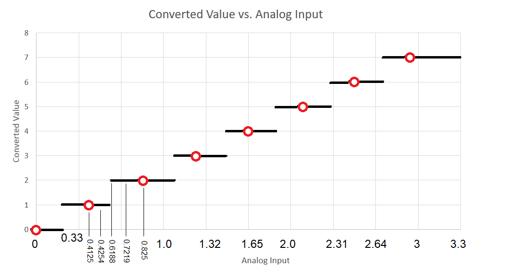

| Lecture: | 19 |
| Objective: | To provide a working understanding of an analog to digital converter including: converter resolution, voltage references, and quantization error. |
Analog to Digital Conversion
The PIC has an analog to digital converter (ADC) subsystem which takes an analog input between 0 and 3.3v and converts the analog voltage into number, called the converted value between 0 and 1023. The conversion from voltage to number is ratiometric, meaning that the output is directly proportional to the input.Ratiometric
Ratiometric means that the ratio of the input voltage to 3.3v is the same as the ratio of the converted value to 1024. The leftmost graph below shows the input voltage vs. the converted value. In reality the graph is not a smooth line, but the orange staircase going upwards every α = 3.3v/1024. The first half step allows the transition from converted value 0b000 to 0b001 to occur at the half-way point between 0v and αv. The ideal transfer function shows how the input voltage is converted by an ADC with an infinite number of bits - every analog input voltage would have its own unique binary representation on the output.
Let's apply the definition of ratiometric to a pair of problems.
- Question:Say the PIC ADC input is at 1v input, what is the
converted value?
Answer:3.3v 1 v ---- = --- x = 310.3 1024 x However, we cannot have a fractional answer so the ADC will round the converted value to the nearest integer resulting in a converted value of 310.
- Question:Your program reads a converted value of 842 in the PIC's
ADC subsystem. What analog voltage is present on the input?
Answer:3.3v x v ---- = --- x = 2.71 v 1024 842
Converter resolution
When you work with other microcontrollers you will not doubt find that they have different number of bits. The number of bits produced in the converted value is called the resolution of the ADC. A count is a one unit change in the converted value. So a N-bit ADC has 2N counts in its full range.Fundamentally, changing the resolution of the ADC changes the scale on the vertical axis of the ratiometric graph shown above. So all we need to do to determine converted values is to change the "210" in the graph with "2N", where N is the resolution of the ADC.
Let's start our exploration of this concept by examining a straight forward question.
- Question:How many bits does the PIC use to represent the
converted value?
Answer:Since the result is in the range of 0-1023, 10-bits is sufficient to represent the converted value. - Question: You are using an ADC with 12-bit resolution and a
3.3v reference that has an analog input of 1v, what is the converted value?
Answer:3.3v 1 v ---- = --- x = 1,241 212 x
- Question: Your program reads a converted value of 842 on a
14-bit ADC that is using a 3.3v reference. What analog voltage is present
on the input?
Answer:3.3 v x v ----- = --- x = 0.17 v 214 842
- Question:Say you are using an ADC with a 3-bit resolutions
and a 3.3 V and 0 V input voltage range, what is the converted value for
the following inputs?
Answer:Input voltage converted value 0.4125 V 0.4254 V 0.6188 V 0.7219 V 0.825 V 3.3 v 0.625 v ----- = ------- x = (0.4125 * 8) / 3.3 = 1 2^3 x x = (0.4254 * 8) / 3.3 = 1.25, round to 1 x = (0.6188 * 8) / 3.3 = 1.5, round to 2 x = (0.7219 * 8) / 3.3 = 1.75, round to 2 x = (0.825 * 8) / 3.3 = 2 - Question:Say you are using an ADC with a 3-bit resolutions
and a 3.3 V and 0 V voltage reference, what analog input is associated
with each of the following converted values?
Answer:Converted Value Analog Input 0 1 2 3 4 5 6 7 3.3 v x v ----- = ------- x = 0 * 3.3V / 8 = 0 2^3 0 x = 1 * 3.3V / 8 = 0.413 V x = 2 * 3.3V / 8 = 0.825 V x = 3 * 3.3V / 8 = 1.238 V x = 4 * 3.3V / 8 = 1.65 V x = 5 * 3.3V / 8 = 2.063 V x = 6 * 3.3V / 8 = 2.475 V x = 7 * 3.3V / 8 = 2.888 V
Voltage references
We started this section by having the PIC converts voltages between 0v and 3.3v. The minimum and maximum voltage for an ADC are called the reference potentials. You can configure the PIC to use two pins Vref- (RA2) and Vref+ (RA3) as the A/D reference potentials and on our development board, these pins are connected to 10kΩ resistors to 3.3v through the two push buttons. If you did not press the push buttons, you could ties these two pins to other voltages to change the reference potentials on the PIC. You could do this in order to decrease the quantization error. Let's examine two examples that will help us better understand this concept.- Question:The PIC has 0v and 3.3v reference potentials,
determine the converted value for 2.2V.
Answer:3.3 V 2.2 V ----- = ----- x = 683 1024 x
- Question:
Set Vref- = 1v and Vref+ to 3v, determine the
converted value for 2.2V.
Answer:(3 V - 1 V) (2.2 V - 1.0 V) ------------ = --------------- x = 614 1024 x - Question:You are working with a 12-bit ADC with 1 V and 3 V
reference potentials, determine the converted value for 1.8V.
Answer:(3 V - 1 V) (1.8 V - 1.0 V) ------------ = --------------- x = 1638 2^12 x
Quantization error
This process of converting an analog voltage to a digital value is commonly called quantization. Related to the concept of quantization is quantization error. Quantization error is measured in terms of input volts and is the amount of rounding error, typically ½ of the least significant bit, or ½ count. You could also think about it as the worst case difference between an input voltage and the converted value's corresponding analog input voltage. A third way to think about quantization error is to ask, "how far off can the converted value be in representing the actual analog input?" Let's look at a numerical value to understand this definition better.Say you are using an ADC with a 3-bit resolution with 3.3 V and 0 V reference voltages and apply an input of 0.4254 V. Looking at some of the previous work performed in this lecture, we see that a 0.4254 V input has a converted value of 1.25 which is rounded to 1. The difference between the true output of 1.25 and the actual output of 1.0, when represented in terms of the input voltage corresponds to 0.4254 V - 0.4125 V = 0.0129 V which is the quantization error for an input voltage of 0.4254. Different input voltages will have different quantization errors. An important value is the worst case quantization error; it is typically this value that is quoted when you read a quantization error specification for an ADC. In order to determined this worst-case quantization error you need to find the maximum rounding error in the converted value for an input voltage. To help with this, let's plot the data we created for the 3-bit ADC from a previous section.
Say you are using an ADC with a 3-bit resolutions and a 3.3 V and 0 V input voltage range, what analog input is associated with each of the following converted values? We found the answer to be:
| Converted Value | Analog Input |
| 0 | 0 V |
| 1 | 0.413 V |
| 2 | 0.825 V |
| 3 | 1.238 V |
| 4 | 1.65 V |
| 5 | 2.063 V |
| 6 | 2.475 V |
| 7 | 2.888 V |

Now this graph can help you to better understand quantization error. Quantization error is the maximum amount of rounding error in the converted value represented in terms of the input. Looking at this graph, the maximum rounding error occurs when the converted value jumps to a new value. For example an analog input of 0.6188 V generates a fractional converted value of 1.5 that is rounded to 2. The converted value misrepresents the true converted value by 0.5 "bits" Since quantization error is represented in terms of the input voltage, let's convert ask how much input voltage corresponds to half a bit using our familiar ratiometric equation.
3.3v x v
---- = ---- x = 0.5 * 3.3V / 8 = 0.20625 V
2^3 0.5
So the quantization error of an 3-bit ADC with reference voltages 0 V
and 3.3V is 0.20625 V.Any way you look at it, the input analog voltage can change by at most the equivalent of ½LSB without a change in the converted value. This ½LSB equivalent on the input is the quantization error.
- Question:What is the quantization error of PIC?
Answer: Now let's return to our problem of finding the quantization error. Since we are looking for the voltage corresponding to a change of ½ of a bit, let's just find the voltage that corresponds to 0.5 bits.3.3 v x v ----- = --- x = 1.61 mV 1024 0.5Thus the quantization error is 1.61 mV, pretty small stuff. - What is the quantization error for an PIC with 1 V and 3 V reference
potentials?
Answer:(3 V - 1 V) x V ----------- = ---- x = 0.98 mV 1024 0.5 - Question:
Determine the quantization error for a 0 V to 3.3 V reference potential
analog to digital converter for different resolutions.
Answer:Resolution Quantization Error 8-bit 10-bit 12-bit 14-bit 16-bit 3.3 V x V ----- = ---- x = 6.45 mV 2^8 0.5
Test your understanding
You can find the solutions embedded in the "source code" for this web page by right mouse clicking on this web page and selecting "view source". The solutions are in HTML comments.- Complete the following table.
Analog voltage Converted Value Resolution VRH VRL 212 8-bit 5 V 0 V 212 8-bit 3 V 2 V 212 12-bit 5 V 0 V 212 12-bit 3 V 2 V 2.6 V 8-bit 5 V 0 V 2.6 V 8-bit 3 V 2 V 2.6 V 12-bit 5 V 0 V 2.6 V 12-bit 3 V 2 V 0.244 V 100 5 V 0 V 2.4 V 205 3 V 2 V 2.79 V 102 8-bit 0 V 2.79 V 101 8-bit 2 V - Complete the following table.
Resolution VRH VRL Quantization Error 12-bit 5 V 3 V 11-bit 12 V 1.22 mV 14-bit 2 V 120 uV 5 V 2 V 1.46 mV